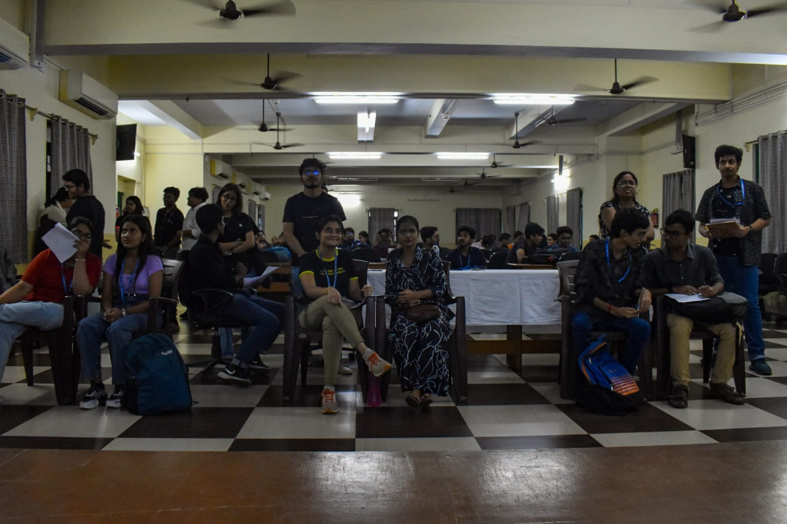

13th October 2023 marked a momentous occasion for the Xaverian Astronomical Society (XAS) as it celebrated its inauguration after being officially recognised as a society of St. Xavier’s College (Autonomous), Kolkata. To commemorate this milestone, XAS organised a seminar followed by a quiz competition at the Seminar Hall of the Department of Education from 2:45 p.m. to 5:00 p.m.
The seminar commenced with an encouraging inaugural address by Reverend Father Principal Dr. Dominic Savio SJ. This was followed by an introductory speech by Dr. Shibaji Banerjee, Head of the Department of Physics and Assistant Director of the Father Eugene Lafont Observatory, which is closely managed by members of XAS.

Seminar Session
Dr. Suparna Roychowdhury, Deputy President of XAS, introduced the guest speaker, Dr. Tirtha Pratim Das, Director of the Space Science Programme Office (SSPO), ISRO, who joined the event via an online platform. The formal proceedings concluded with a vote of thanks delivered by the Secretary of XAS, Mayukh Chatterjee.
The highlight of the seminar was Dr. Tirtha Pratim Das’s enlightening session on the physics and engineering behind ISRO’s recent lunar mission, Chandrayaan-3. His talk offered valuable insights into India’s space ventures and was followed by an engaging question-and-answer session with active student participation.
Quizathon
Following the seminar, a brief refreshment break preceded the much-awaited Quizathon, an astronomy quiz competition. Teams qualifying from the preliminary rounds competed enthusiastically, demonstrating their knowledge of astronomy and space science.
Uditi Nag and Bipasha Bhattacharjee (2nd Year, Department of Physics) emerged victorious and were awarded a memento, pen, and certificate of victory. With this, the inaugural event of XAS concluded successfully, marking the beginning of many future milestones for the society.